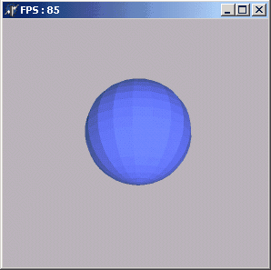
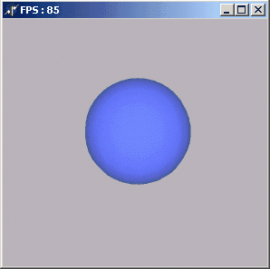

DRKB Explorer
OpenGL в Delphi. Часть 4. Сглаживание
01.01.2010
Сглаживание позволяет получить более красивую картинку.
По умолчанию сглаживание включено.
За включение/выключение этого самого сглаживания отвечает процедура
glShadeModel
Параметры у неё следующие:
GL_SMOOTH - установлено по-умолчанию
GL_FLAT - отключение режима сглаживания
Кстати интерполяция цветов происходит ТОЛЬКО при включённом сглаживании!
Как в этой демке
Существенные различия в работе процедуры с разными параметрами видны
невооружонным глазом:
 
Вот и всё!